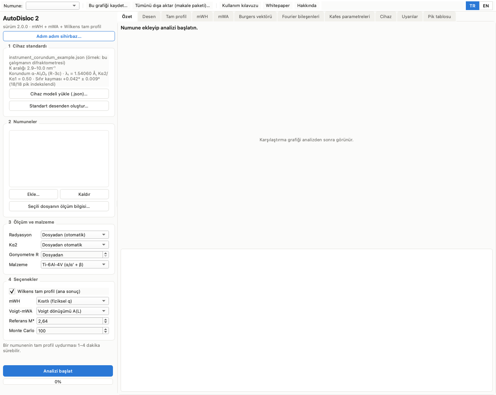
AutoDisloc 2, laboratuvar X-ışını kırınımı (XRD) desenlerinden hcp α/α′ titanyum alaşımlarının (ör. Ti-6Al-4V, CP-Ti) dislokasyon yoğunluğunu ρ, Burgers vektörü popülasyonunu (⟨a⟩, ⟨c⟩ ve ⟨c+a⟩ dislokasyonlarının oranları), dislokasyon düzen parametresini M* ve kristalit boyutunu hesaplar. Farklı difraktometrelerin verilerini (Bruker, PANalytical, her türlü iki sütunlu dosya) okur; her X-ışını tüpü ve her çizgi standardıyla çalışır. İki tür ölçüme ihtiyaç duyar:
Sonuçlar programda grafik ve tablolar hâlinde gösterilir; yayına hazır şekiller (PNG/TIFF 600 dpi, PDF, SVG), Excel raporu ve LaTeX tablosu olarak dışa aktarılabilir. Matematik whitepaper'da anlatılır; bu kılavuz programın nasıl kullanılacağını anlatır.
AutoDisloc üç yolla çalıştırılabilir. Hazır uygulamalar başka bir şey gerektirmez; kaynaktan çalıştırmak Python gerektirir.
| Yol | macOS | Windows | Gereksinim |
|---|---|---|---|
| Hazır uygulama | AutoDisloc2_macOS.zip | AutoDisloc2_Windows.zip | yok |
| Kaynaktan (çift tıklama) | AutoDisloc2_Mac.command | AutoDisloc2_Windows.bat | Python ≥ 3.9 |
| Komut satırı / Python kütüphanesi | python -m autodisloc … | python -m autodisloc … | Python ≥ 3.9 |
AutoDisloc2_macOS.zip'i indirin (ya da dist/ klasöründen alın).AutoDisloc2.app oluşur. Uygulamalar klasörüne sürükleyin.macOS yine de izin vermezse (örneğin kurum tarafından yönetilen bir bilgisayarda) karantina işareti Terminal'de kaldırılabilir:
xattr -dr com.apple.quarantine /Applications/AutoDisloc2.app
AutoDisloc2_Windows.zip'i indirin ve açın (sağ tık › Tümünü ayıkla).AutoDisloc2 klasörünü açıp AutoDisloc2.exe'ye çift tıklayın. Klasördeki diğer dosyaları silmeyin; program onlara ihtiyaç duyar.AutoDisloc2.exe'ye sağ tıklayıp Gönder › Masaüstü (kısayol oluştur).Windows uygulaması bir Windows bilgisayarda packaging\build_windows.bat ile de derlenebilir (gereksinimleri ve PyInstaller'ı kurar, dist\AutoDisloc2\AutoDisloc2.exe'yi yazar). GitHub'da yayımlanan her sürüm iki uygulamayı da otomatik derler.
AutoDisloc2_Mac.command (macOS) ya da AutoDisloc2_Windows.bat (Windows) dosyasına çift tıklayın. İlk açılış eksik paketleri bir kez kurar.Ya da depo klasöründe bir terminalde:
python -m pip install -r requirements.txt python AutoDisloc2.py
| Konu | Öneri |
|---|---|
| Geometri, ışınım | Bragg–Brentano; Ni β filtreli ya da monokromatörlü Cu Kα (Kα1+Kα2). Co, Fe, Cr, Mo veya Ag Kα da kullanılabilir (Bölüm 5.5). |
| Aralık | en az 2θ = 30–85° (sekiz α yansımasının tamamı, 10.0 … 20.1); 20–90° yaygındır |
| Adım, süre | 0,01–0,02° adım; pik tepelerinde en az birkaç bin sayım |
| Veri işleme | yok: Kα2 ayıklama, yumuşatma ve zemin çıkarma yapılmamalı |
| Çizgi standardı | numunelerle aynı yarıklar, adım ve süre, tercihen aynı gün; en iyisi LaB6 (NIST SRM 660c), Si (SRM 640f), CeO2 veya korundum kabul edilebilir (Tablo 6) |
| Numune | düz parlatılmış yüzey; doku program tarafından raporlanır (Harris katsayısı) |
| Biçim | Uzantı | Otomatik okunan |
|---|---|---|
| Bruker DIFFRAC plus RAW 1.01 | .raw | λ₁, λ₂, Kα2/Kα1 (0 = ayıklanmış), gonyometre yarıçapı |
| Bruker UXD (text) | .uxd | λ₁, λ₂, Kα2/Kα1 (_WL1, _WL2, _WLRATIO) |
| PANalytical XRDML | .xrdml | λ₁, λ₂, Kα2/Kα1, gonyometre yarıçapı, anot |
| iki sütunlu metin (2θ, sayım) | .xy .dat .txt .csv | isteğe bağlı başlık satırları # WL1 = 1.5406, # WL2 = …, # WLRATIO = 0.5, # RADIUS = 250 veya # ANODE = Cu; yoksa Cu Kα, 0,5 ve 250 mm varsayılır ve öyle işaretlenir |
Dosyada olmayan hiçbir değer sessizce tahmin edilmez: sihirbazda, Seçili dosyanın ölçüm bilgisi… penceresinde ve Excel raporunda varsayıldı olarak listelenir; dalga boyu eksikse uyarı verilir; pikler başka bir anotla çok daha iyi eşleşiyorsa o anot önerilir. Her değer elle düzeltilebilir (Bölüm 5.5). Diğer biçimler (ör. Bruker DIFFRAC.SUITE RAW sürüm 4, Rigaku) cihaz yazılımından XRDML, UXD ya da yukarıdaki başlık satırlarıyla iki sütunlu metin olarak dışa aktarılabilir.
Şekil 1, programla gelen iki örnek desenin (examples/) analizinden sonraki pencereyi gösterir. Numaralı bölümler Tablo 4'te açıklanmıştır.
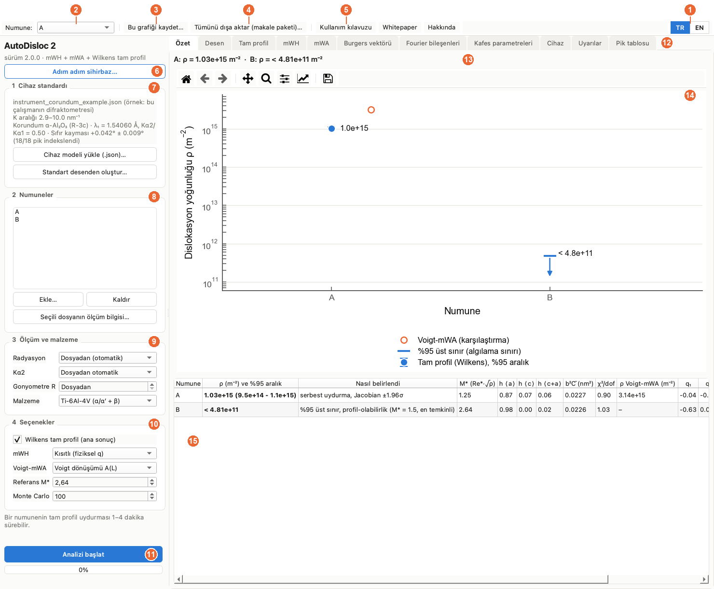
| Bölüm | Görevi | |
|---|---|---|
| 1 | Dil | Türkçe ile İngilizce arasında geçiş yapar; sonuçlar ve uyarılar yeni dilde yeniden gösterilir. |
| 2 | Numune | Sekmelerin hangi numuneyi göstereceğini seçer. |
| 3 | Bu grafiği kaydet… | Açık sekmedeki grafiği kaydeder (Bölüm 7.1). |
| 4 | Tümünü dışa aktar (makale paketi)… | Tüm şekilleri, Excel raporunu ve tabloları yazar (Bölüm 7.2). |
| 5 | Kullanım kılavuzu, Whitepaper, Hakkında | Bu kılavuzu, matematiksel açıklamayı ve sürüm-lisans bilgisini açar. |
| 6 | Adım adım sihirbaz… | Tüm bilgileri sırayla soran isteğe bağlı sihirbaz (Bölüm 5.2). |
| 7 | 1 Cihaz standardı | Kullanılan cihaz modeli; yükleme ya da oluşturma (Bölüm 5.3). |
| 8 | 2 Numuneler | Analiz edilecek desenlerin listesi (Bölüm 5.4). |
| 9 | 3 Ölçüm ve malzeme | Radyasyon, Kα2, gonyometre yarıçapı, alaşım (Bölüm 5.5). |
| 10 | 4 Seçenekler | Analiz seçenekleri (Bölüm 5.6). Pencere küçükse panel kaydırılır. |
| 11 | Analizi başlat | Analizi başlatır; alttaki çubuk ilerlemeyi gösterir. |
| 12 | Sekmeler | Seçili numunenin sonuçları (Bölüm 6). |
| 13 | Başlık satırı | Her numunenin ana sonucu ρ. |
| 14 | Karşılaştırma grafiği | Tüm numunelerin %95 aralıklı ρ değerleri. |
| 15 | Özet tablo | Her numunenin ana sayıları (Tablo 10). |
Her grafiğin üstünde matplotlib araç çubuğu vardır: ev görünümü sıfırlar, oklar görünümler arasında gezinir, artı işareti kaydırır, büyüteç bir dikdörtgene yakınlaştırır, disk ise şekli ekrandaki hâliyle kaydeder. Yayın kalitesinde dosya için bunun yerine Bu grafiği kaydet…'i kullanın.
Araç çubuğunun sağındaki TR ya da EN'e basın. Pencere seçilen dilde yeniden kurulur; yüklü numuneler, seçenekler ve sonuçlar korunur. Dışa aktarılan dosyalar (klasör adları, Excel sayfaları, şekil etiketleri) dışa aktarma anındaki dili kullanır.
Sihirbaz, bir analiz için gereken her şeyi sayfa sayfa sorar ve her sayfada programın dosyalardan kendiliğinden okuduklarını gösterir. Sol panelin üstündeki Adım adım sihirbaz… ile açılır. Analizi başlat'a basıldığında program onu ayrıca önerir (Sihirbazı aç / Doğrudan hesapla); soruyu kapatmak için Bir daha sorma'yı işaretleyin (sihirbazın ilk sayfasından yeniden açılabilir). Kullanmak hiçbir zaman zorunlu değildir: tüm ayarlar sol panelde de bulunur.
| Sayfa | Ne yapılır |
|---|---|
| 1 · Veri ve ölçüm bilgileri | Numune dosyalarını ekleyin. Tablo, her dosyanın biçimini, λ₁, Kα2/Kα1 ve gonyometre yarıçapını kaynağıyla (dosyadan, kırmızı varsayıldı ya da kullanıcı) gösterir. Radyasyonu, Kα2'yi veya yarıçapı yalnızca eksik ya da yanlışsa düzeltin (Şekil 2). |
| 2 · Malzeme | Hazır alaşımı seçin ya da nominal kafes parametrelerini girin (Bölüm 5.5). |
| 3 · Cihaz genişlemesi | Mevcut cihaz modelini kullanın, kayıtlı bir modeli yükleyin ya da seçtiğiniz standart malzemeyle bir standart ölçümünden yenisini oluşturun; Standardı uydur'a ve isterseniz Modeli kaydet…'e basın (Şekil 3, Bölüm 5.3). Numunelerden farklı bir dalga boyu kırmızıyla gösterilir. |
| 4 · Seçenekler | Tablo 9'daki gibi. |
| 5 · Özet | Tüm ayarlar bir bakışta; Analizi başlat bunları ana pencereye uygular ve hesaplamayı başlatır. |
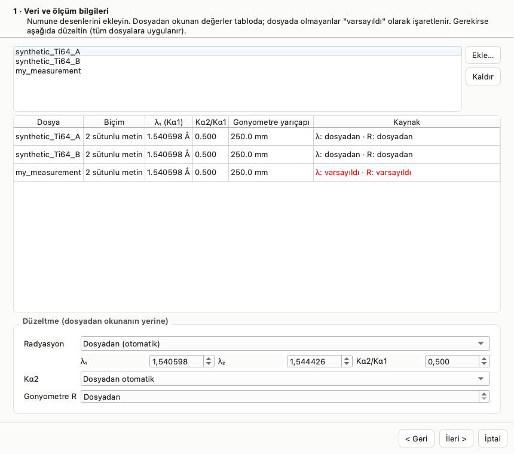
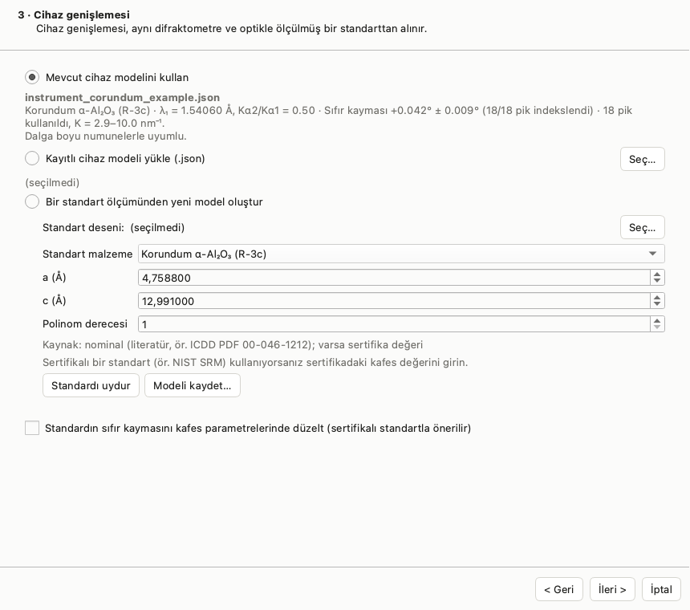
Cihaz modeli, difraktometrenin kendisinin ürettiği pik genişliklerini tanımlar. İlk açılışta programın kendi difraktometresine ait örnek model yüklenir (örnek etiketiyle). Kendi cihazınız için kendi modelinizi oluşturun:
.json dosyası olarak kaydedin. Sonuç Cihaz sekmesinde görünür (Şekil 4).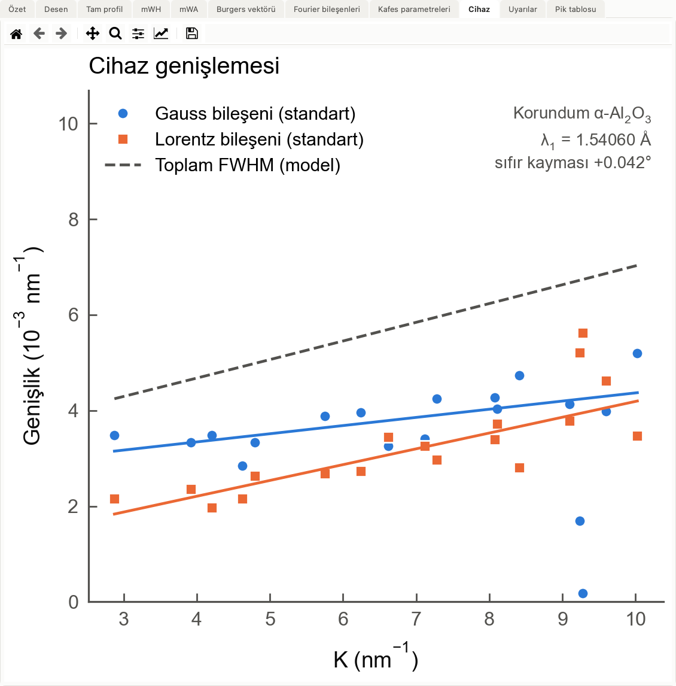
| Standart | Uzay grubu | Varsayılan kafes (Å) | Varsayılanın kaynağı |
|---|---|---|---|
| LaB₆ | Pm-3m | a = 4.156826 | NIST SRM 660c, 22,5 °C'de sertifikalı |
| Si | Fd-3m | a = 5.431144 | NIST SRM 640f, 22,5 °C'de sertifikalı |
| CeO₂ | Fm-3m | a = 5.4111 | nominal (SRM 674a bilgi değeri 5,411102) |
| Korundum α-Al₂O₃ | R-3c | a = 4.7588, c = 12.9910 | nominal literatür değeri; plakanızın ya da tozunuzun sertifikasını kullanın |
| diğer / bilinmeyen | – | – | bulunan tüm pikler kullanılır; indeksleme ve sıfır kayması yok |
İndekslemenin üç yararı vardır. Standardın yansıması olmayan pikler (safsızlık, Kβ ya da tungsten çizgileri) genişlik modeline alınmaz. Pikler az sayıda indekslenebiliyorsa program, standart malzemenin, kafes parametresinin ya da radyasyonun muhtemelen yanlış olduğunu bildirir. Son olarak, gözlenen ve hesaplanan konumların farkı gonyometrenin sıfır kaymasını ve standardın yüzey yer değiştirmesini verir. Bunlar Cihaz sekmesinde ve cihaz etiketinde gösterilir. Sıfır kaymasının numunelerin kafes parametrelerine uygulanması isteğe bağlıdır (sihirbaz sayfa 3, komut satırında --zero). Yalnızca kafes parametresi sertifikalı bir standartla önerilir: nominal kafesle sıfır kayması ve yer değiştirme güvenilir biçimde ayrılamaz.
Sol paneldeki 3 Ölçüm ve malzeme grubu, cihaza ve alaşıma bağlı ayarları içerir. Varsayılanlar (Dosyadan) RAW, UXD ve XRDML dosyaları için doğrudur.
| Ayar | Varsayılan | Anlamı |
|---|---|---|
| Radyasyon | Dosyadan (otomatik) | Cu, Co, Fe, Cr, Mo veya Ag Kα (tablo dalga boyları) ya da Özel… (λ₁, λ₂, Kα2/Kα1). Başlıksız iki sütunlu dosyalar ve yanlış kayıtlı dosyalar için gereklidir. |
| Kα2 | Dosyadan otomatik | Ham veri için Var, Kα2 ayıklandıktan sonra dışa aktarılan veri için Ayıklanmış. |
| Gonyometre R | Dosyadan | Gonyometre yarıçapı (ör. PANalytical 240 mm, Bruker D8 250 mm). Yalnızca µm cinsinden yer değiştirmeyi etkiler, ρ'yu etkilemez. Standardınkinden farklı bir yarıçap başka bir difraktometre demektir ve bildirilir. |
| Malzeme | Ti-6Al-4V | Hazır alaşım (Tablo 8) ya da α a, c, β a ve β fazıyla Özel…. |
| Hazır alaşım | α a, c (Å) | β a (Å) | β fazı |
|---|---|---|---|
| Ti-6Al-4V (α/α′ + β) | 2.925, 4.670 | 3.205 | varsa modellenir |
| CP-Ti, derece 1–4 (α) | 2.9505, 4.6826 | – | modellenmez |
| özel α-Ti alaşımı | kullanıcı | kullanıcı | otomatik / her zaman / yok |
Varsayılan olarak nominal kafes, belirgin biçimde farklıysa (bir yansımayı 0,35°'den fazla kaydırıyorsa) ölçülen desene göre ayarlanır (en güçlü tepeler α yansımalarıyla eşleştirilir); böylece “yanlış” hazır alaşım seçilse bile her α-Ti alaşımı, her dalga boyu ve gonyometre kayması işlenir, doğru hazır alaşımla elde edilen sonuçlar ise değişmez. Analizdeki kontrast faktörleri, elastik sabitler ve Burgers vektörleri hcp α/α′ titanyuma aittir; program bu nedenle başka hcp metaller (Zr, Mg, …) için tasarlanmamıştır. Numune grubundaki Seçili dosyanın ölçüm bilgisi… bir dosyadan neyin okunduğunu ve neyin varsayıldığını gösterir.
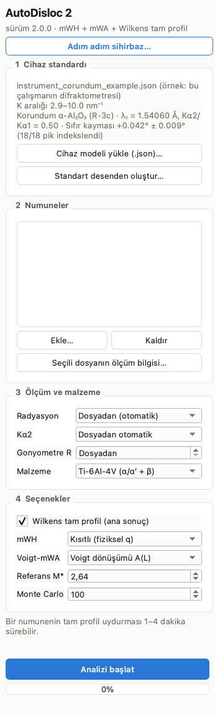
| Seçenek | Varsayılan | Anlamı |
|---|---|---|
| Wilkens tam profil | açık | Ana sonuç. Yalnızca hızlı bir ön bakış için kapatın (yalnızca mWH ve mWA). |
| mWH | Kısıtlı (fiziksel q) | Serbest q1, q2, q1 ve q2'yi kısıt olmadan uydurur; karşılaştırma içindir. |
| Voigt-mWA | Voigt dönüşümü A(L) | Yalnızca karşılaştırma yöntemi. Muiruri 2020 Denk. 13 / HajyAkbary 2015 Denk. 23 bu makalelerin yayımlanmış formülünü yeniden üretir. |
| Referans M* | 2.64 | Yalnızca ρ ile M* birlikte belirlenemediğinde (zayıf genişleme) kullanılır; aralık o zaman 1,5–4,0 bandını kapsar. Varsayılan 2,64, programın geliştirilmesi sırasında örnek cihaz modeliyle ölçülmüş iyi koşullu iki numunenin serbest uydurma M* değerlerinin (2,17 ve 3,21) geometrik ortalamasından ibarettir; evrensel bir sabit değildir. ρ bu varsayıma bağlıdır (büyük M* daha küçük ρ verir): malzemenize ve cihazınıza uygun bir değer girin, ör. kendi iyi koşullu numunelerinizin serbest uydurma M* değeri. M* programın tanımıyladır (Bölüm 6.2). |
| Monte Carlo | 100 | Voigt-mWA belirsizliği için çekim sayısı; 0 analizi hızlandırır. |
Analizi başlat'a basın. Çubuk hangi numunenin işlendiğini gösterir. Tam profil uydurması numune başına yaklaşık 1–4 dakika sürer; algılama sınırındaki numuneler daha uzun sürer, çünkü program bir üst sınır için profil olabilirliğini tarar. Pencere analiz sırasında kullanılabilir kalır. Analiz bitince Özet sekmesi açılır.
Araç çubuğundaki Numune kutusu, sekmelerin hangi numuneyi göstereceğini seçer. Başlık satırı ve özet sekmesi tüm numuneleri birlikte gösterir.
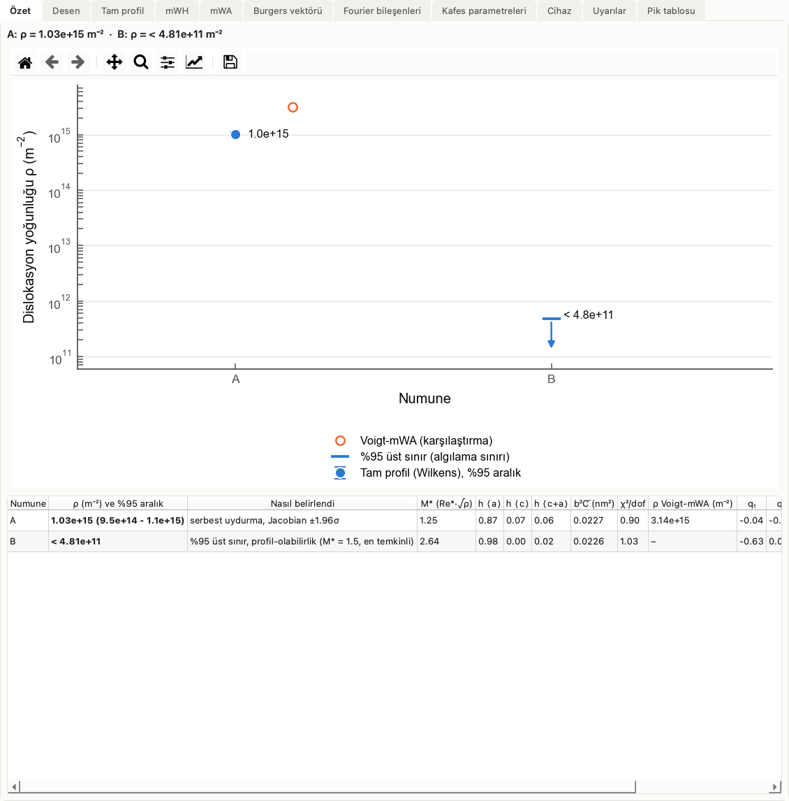
| Sütun | Anlamı |
|---|---|
| ρ (m⁻²) ve %95 aralık | Ana sonuç. “< x”, dislokasyon genişlemesinin algılama sınırının altında olduğunu gösterir; x %95 üst sınırdır. |
| Nasıl belirlendi | serbest uydurma, Jacobian: ρ ve M* serbest uyduruldu (en güvenilir); M* sabit: zayıf genişleme, aralık M* bandını içerir; üst sınır: algılama sınırı. |
| M* | Dislokasyon düzen parametresi M* = Re*·√ρ, programın tanımıyla (küçük: güçlü perdelenmiş, ör. dipoller; büyük: zayıf ilişkili dislokasyonlar). CMWP değerleriyle karşılaştırmak için 2,568'e bölün (Bölüm 6.2). |
| h ⟨a⟩, h ⟨c⟩, h ⟨c+a⟩ | Burgers vektörü tiplerinin oranları (toplam 1). |
| b²C̄ (nm²) | Ortalama kontrast faktörü × b²; ρ bununla ters orantılıdır. |
| χ²/dof | Tam profil uydurmasının kalitesi; ≈1 idealdir, 3'ün üstünde model bir şeyi kaçırıyor demektir (Bölüm 6.6). |
| Voigt-mWA ρ | Klasik yöntemin karşılaştırma değeri; raporlamak için değil. |
| q₁, q₂, D | Modifiye Williamson–Hall analizinden kontrast parametreleri ve boyut. |
| α a, α c, α c/a, β a | Fazların kafes parametreleri (Å), Bölüm 6.5. |
AutoDisloc Wilkens fonksiyonunu η = L/Re* ile hesaplar; Re* = Re/2,877, Re ise mWA'nın logaritmik ln(Re/L) biçimindeki kesme yarıçapıdır; Re* ve M* = Re*·√ρ raporlanır. MWP-fit ve CMWP η = ½·e−1/4·L/Re* kullanır (Ribárik, Ungár & Gubicza 2001, J. Appl. Cryst. 34, 669, Denk. 4) ve kendi Re*'larıyla M* = Re*·√ρ raporlar. Aynı fiziksel durum için M*(CMWP) = M*(AutoDisloc)/2,568'dir (2,568 = 2·e1/4; Re* için de aynı çarpan geçerlidir). ρ iki tanımda da aynıdır. Türetme whitepaper'ın Wilkens fonksiyonu bölümündedir.
ρ ile M* birlikte uydurulamazsa (zayıf genişleme) M*, seçeneklerdeki Referans M* değerine sabitlenir ve aralık 1,5–4,0 bandını kapsar. Varsayılan 2,64, programın geliştirilmesi sırasında örnek cihaz modeliyle ölçülmüş iyi koşullu iki numunenin serbest uydurma M* değerlerinin (2,17 ve 3,21) geometrik ortalamasından ibarettir. Evrensel bir sabit değildir: ρ o zaman varsayılan M*'a bağlıdır (büyük M* daha küçük ρ verir); malzemenize ve cihazınıza uygun bir değer girin, ör. kendi iyi koşullu numunelerinizin serbest uydurma M* değeri.
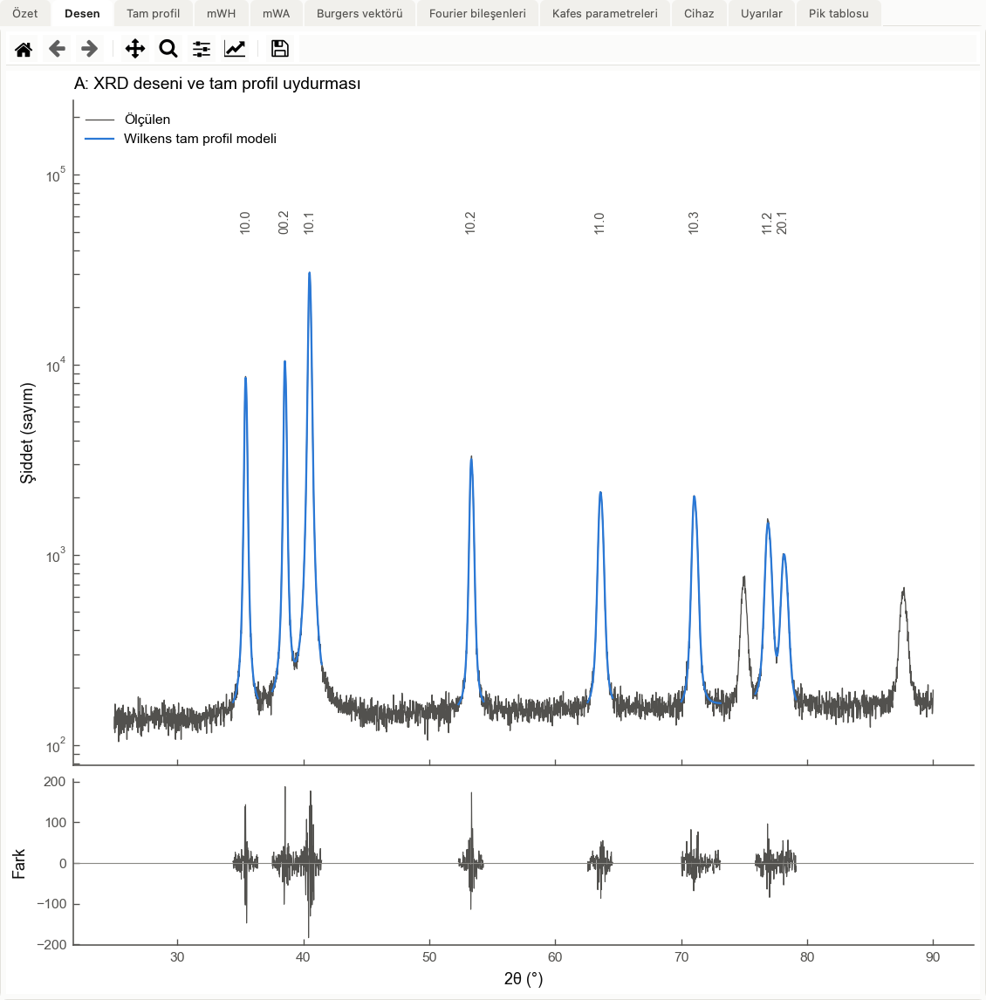
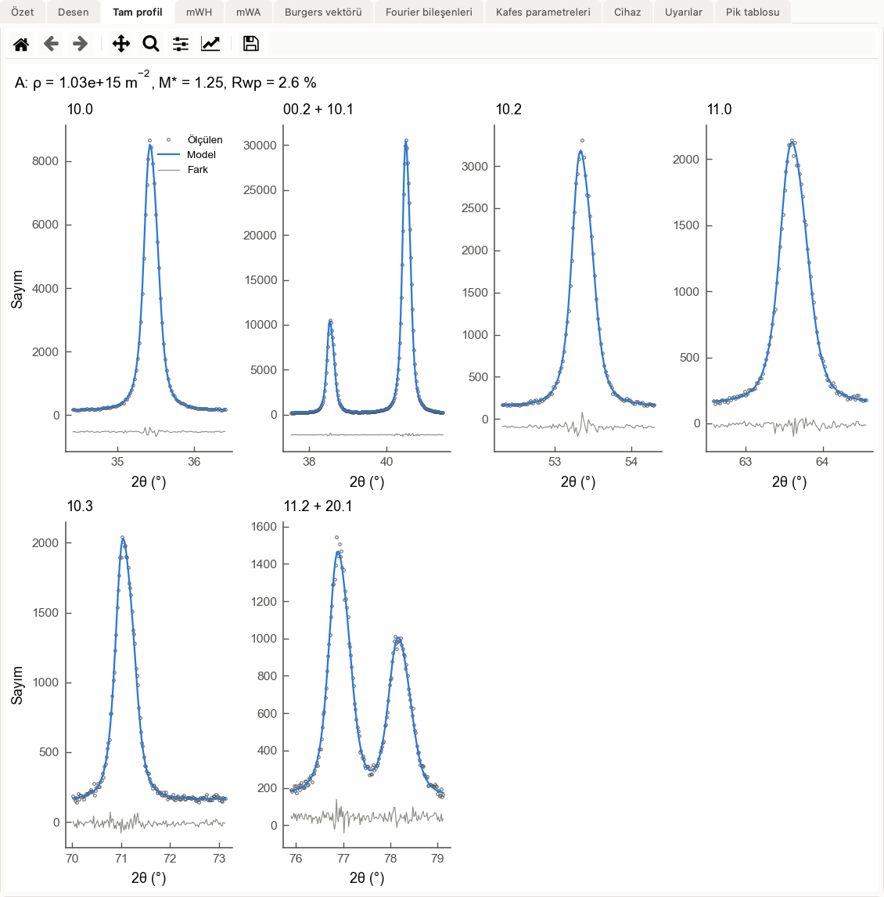
Bu sekmeyi her numune için kontrol edin: pik yanlarında sistematik dalgalı artıklar ya da eksik bir omuz, ikinci bir faza, yanlış bir Kα2 ayarına ya da modelin bilmediği bir pike işaret eder.
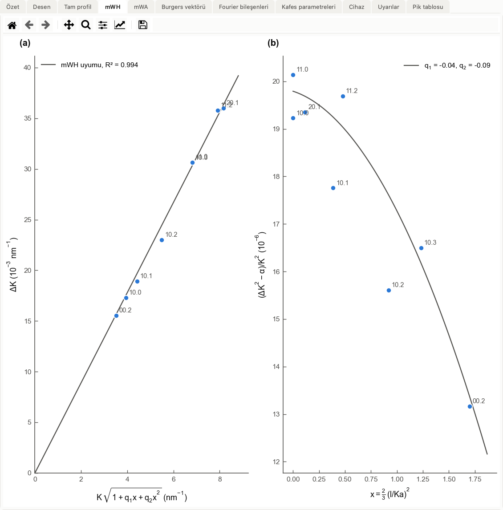
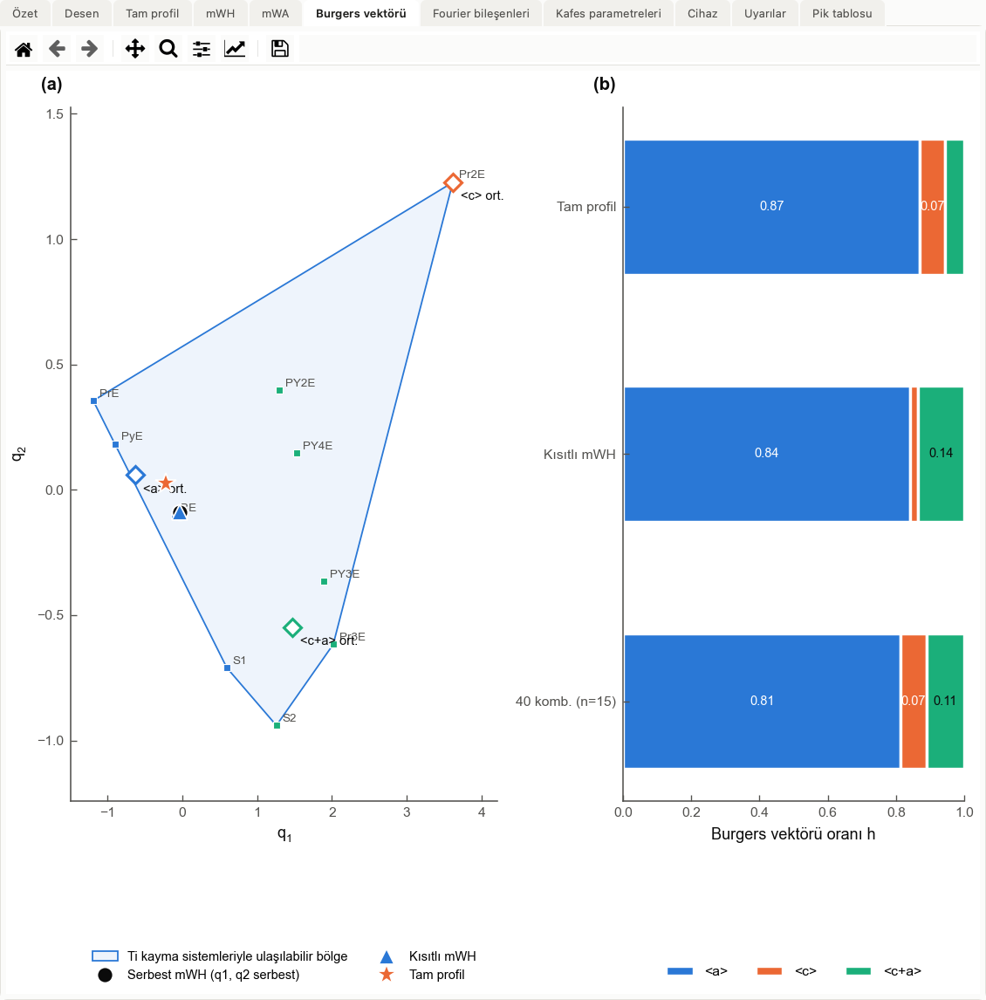
mWA sekmesi klasik Voigt tabanlı Warren–Averbach grafiklerini, Fourier bileşenleri sekmesi en yüksek K'li yansımanın boyut ve dislokasyon Fourier çarpanlarını gösterir; ikisi de karşılaştırma ve anlatım içindir.
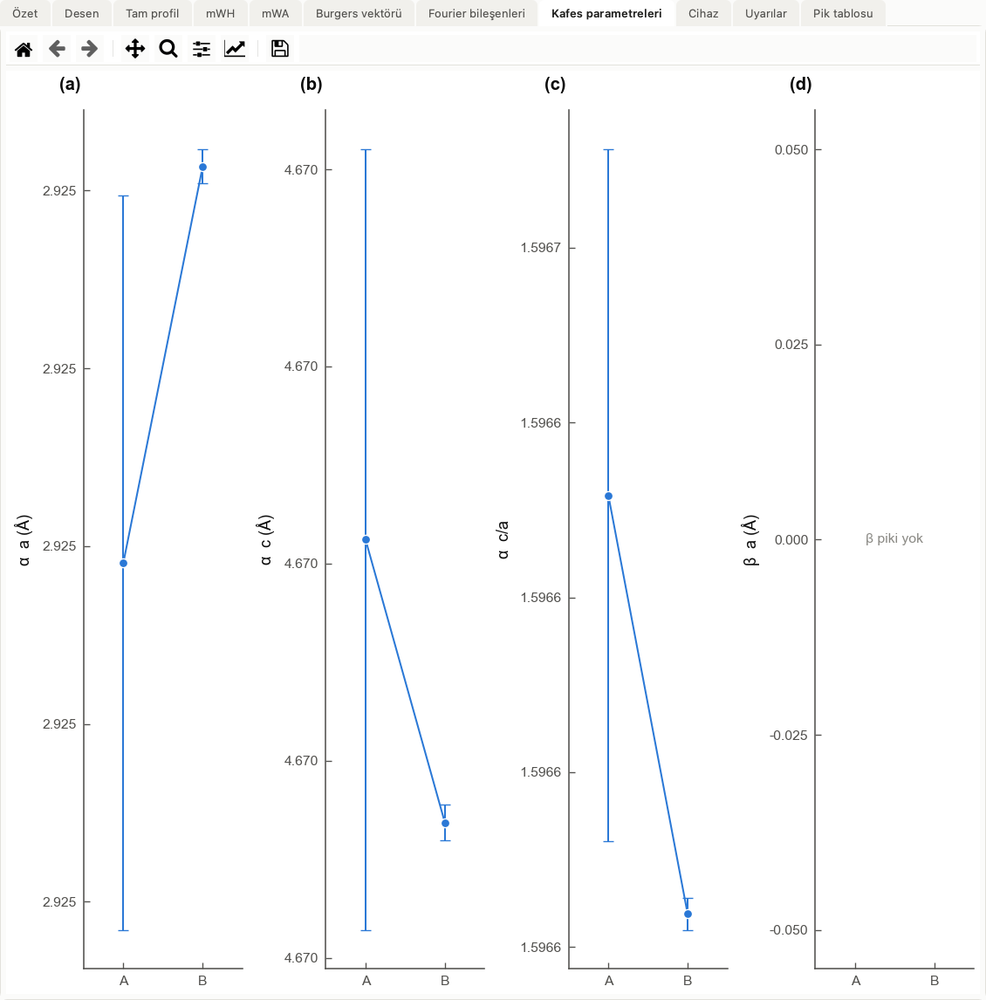
hcp α (α′) fazının kafes parametreleri, sekiz α yansımasının Kα1 konumlarından Cohen en küçük kareler yöntemiyle hesaplanır. Yöntem, Bragg–Brentano ölçümlerinin başlıca sistematik hatası olan numune yüksekliği hatası s için (numune yüzeyinin odaklama çemberinin üstünde ya da altında olması) bir terim içerir; s Excel raporunda verilir (genellikle ±0,3 mm içinde). β kafes parametresi, aynı düzeltmeden sonra anlamlı şiddeti olan (alan > 3σ) her β yansımasından hesaplanır; β piki bulunmazsa değer boş kalır. Hatalar uydurmanın standart hatalarıdır; dalga boyunun ya da gonyometrenin sıfır noktası hatasının belirsizliğini içermez.
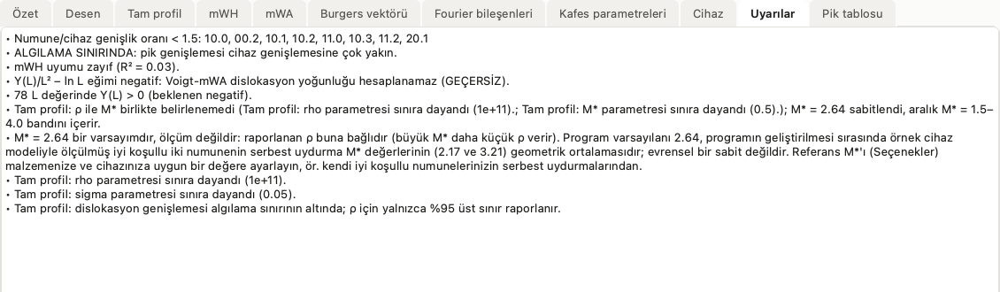
| Uyarı | Anlamı / yapılacak |
|---|---|
| Numune/cihaz genişlik oranı < 1.5; ALGILAMA SINIRINDA | Pikler cihazdan pek geniş değil. Üst sınırı raporlayın; daha iyi bir standart ya da senkrotron verisi kullanın. |
| ρ ile M* birlikte belirlenemedi; M* sabitlendi | Zayıf genişlemeli numunelerde olağandır. ρ o zaman varsayılan M*'a bağlıdır; uyarının sonraki satırı varsayılan değeri açıklar. Referans M*'ı malzemenize ve cihazınıza göre ayarlayın ve raporlarken varsayımı belirtin. |
| Şiddetler büyük olasılıkla ham sayım değil | Dosya saniye başına sayım, normalize ya da işlenmiş. Uydurma ağırlıkları ve hata aralıkları ham sayım varsayar; mümkünse difraktometre yazılımından ham sayımları dışa aktarın. |
| Tam profil χ²/dof > 3 | Model profilin bir kısmını açıklayamıyor (ikinci faz, istif hataları, bileşim farkları, doku). Tam profil sekmesine bakın. |
| Belirgin doku (Harris T, 0.5–2 dışında) | Ortalama kontrast faktörü rastgele yönelim varsayar; h ve ρ'yu dikkatle yorumlayın, EBSD ile kontrol edin. |
| Ölçülen q ulaşılabilir bölgenin dışında | Yalnızca serbest mWH'yi ilgilendirir; kısıtlı mWH ve tam profil etkilenmez. |
| Y(L)/L² eğimi negatif (Voigt-mWA GEÇERSİZ) | Karşılaştırma yöntemi başarısız oldu; ana sonuç etkilenmez. |
| Bileşen cihazdan dar (sıfırlandı) | O bileşen çözülemiyor; algılama sınırına yakın numunelerde sıktır. |
| Pikler standardın K aralığı dışında | Standardı numunelerle aynı 2θ aralığında ölçün. |
Pik tablosu sekmesi her yansıma için 2θ konumunu, ölçülen (m) ve cihazdan arındırılmış (t) Gauss ve Lorentz genişliklerini derece ve K biriminde (nm⁻¹), fiziksel genişlik ΔK'yi, kontrast değişkeni x'i, b²C̄hkl'yi ve numune/cihaz genişlik oranını listeler. Aynı tablo Excel raporunda da vardır.
Sekmeyi açın, Bu grafiği kaydet…'e basın ve pencerede biçimi seçin. Özet sekmesinde karşılaştırma grafiği kaydedilir.
| Biçim | Kullanım |
|---|---|
| PNG 600 dpi | sunumlar, Word belgeleri |
| TIFF 600 dpi (LZW) | bitmap dosya isteyen dergiler |
| PDF vektör | LaTeX belgeleri, vektör şekil kabul eden dergiler |
| SVG vektör | Inkscape ya da Illustrator'da düzenleme |
Şekiller dergi sütun genişliklerinde (tek sütun 8,5 cm, çift sütun 17,5 cm) ve 7–8 pt Arial yazıyla çizilir; %100 boyutta yerleştirilebilir.
Tümünü dışa aktar (makale paketi)… bir klasör sorar ve şunları yazar:
<klasör>/
sekiller/
png/ pdf/ svg/ tif/
00_karsilastirma tüm numunelerin karşılaştırma grafiği
00_cihaz cihaz modeli
00_kafes_parametreleri tüm numunelerin kafes parametreleri
<numune>_1_desen
<numune>_2_tam_profil
<numune>_3_mWH
<numune>_4_mWA
<numune>_5_burgers
<numune>_6_fourier
rapor.xlsx tam rapor (bir sonraki bölüm)
tablo_sonuclar.csv Excel / Origin için sonuç tablosu
tablo_sonuclar.tex LaTeX için sonuç tablosu
tablo_kafes.csv / .tex hatalarıyla kafes parametreleri (α a, c, c/a; β a)
LaTeX tablosu \input{tablo_sonuclar.tex} ile eklenebilir; %95 aralığıyla ρ, M*, üç h oranı ve b²C̄ içerir. Üst sınır numunelerinde “< x” ve tanımsız parametreler için tire yazar.
Çıktı dosyalarının üst verisine yalnızca program adı ve sürümü (ör. “AutoDisloc 2.0.0”) yazılır.
| Sayfa | İçerik |
|---|---|
| Özet | numune başına bir satır: tüm sonuçlar (tam profil, Voigt-mWA, mWH, 40 kombinasyon yöntemi, kafes parametreleri) |
| Sütun açıklamaları | her önemli sütunun anlamı |
| Uyarılar | tüm numunelerin tüm uyarıları |
| n_Pikler | n numunesinin pik tablosu |
| n_mWA | Voigt-mWA'nın Y(L) değerleri |
| n_Burgers | tüm alt sistem karışımları üzerinden aralığıyla Burgers vektörü popülasyonu |
| n_TamProfil | her veri noktası için ölçülen, model ve fark (kendi grafikleriniz için) |
| n_Doku | Harris doku katsayıları |
| Ölçüm ve malzeme | her dosyanın biçimi, radyasyonu, Kα2'si, yarıçapı, aralığı ve adımı, neyin varsayıldığı, alaşım ve kullanılan nominal kafes |
| Cihaz, Cihaz pikleri | cihaz modeli (standart, kafes, dalga boyu, sıfır kayması) ve uydurulan, indekslenen standart pikleri |
Programın yaptığı her şey pencere olmadan da çalıştırılabilir, örneğin çok sayıda dosya için. Depo klasöründe:
# çizgi standardından cihaz modeli python -m autodisloc --lang tr cihaz STANDART.raw -o cihaz.json # birden çok numunenin analizi, Excel raporu ve makale paketi python -m autodisloc --lang tr analiz N1.raw N2.raw N3.raw -c cihaz.json -o rapor.xlsx --paket makale_paketi # Co Kα ile 240 mm gonyometrede ölçülmüş iki sütunlu dosyalar, CP-Ti python -m autodisloc analiz N1.xy -c cihaz.json --radiation Co --radius 240 --material CP-Ti
| Seçenek | Anlamı |
|---|---|
| --lang tr|en | mesajların ve dosyaların dili |
| --ka2 auto|present|stripped | Kα2 durumu (Tablo 7'deki gibi) |
| --radiation Cu|Co|Fe|Cr|Mo|Ag|λ₁,λ₂[,r] | dosya değeri yerine radyasyon |
| --radius MM | dosya değeri yerine gonyometre yarıçapı |
| --standard corundum|LaB6|Si|CeO2|other | (cihaz) standart malzeme |
| --std-lattice A[,C] | (cihaz) standardın kafesi, Å |
| --material Ti-6Al-4V|CP-Ti, --lattice A,C[,Aβ], --beta auto|yes|no | hazır alaşım, nominal kafes, β fazı |
| --no-refine | nominal kafesi koru (desene göre ayarlama yok) |
| --zero | standardın sıfır kaymasını kafes parametrelerine uygula |
| --mwh constrained|free | mWH modu |
| --fourier voigt|eq13 | Voigt-mWA'nın A(L) formülü (eq13: Muiruri 2020 Denk. 13, karşılaştırma için) |
| --mc N | Monte Carlo çekim sayısı |
| --no-whole-profile | tam profil uydurmasını atla (hızlı) |
| --package FOLDER | makale paketini de yaz |
Python kütüphanesi olarak:
from autodisloc import read_pattern, InstrumentModel, analyze, set_language
set_language("tr")
inst = InstrumentModel.load("instrument.json")
res = analyze(read_pattern("examples/synthetic_Ti64_A.xy"), inst, "A")
print(res.summary()["rho_text"], res.wp.M_star, res.wp.h)
Yöntem bölümü için örnek metin:
Dislokasyon yoğunlukları AutoDisloc 2 [atıf] ile X-ışını çizgi profili analiziyle belirlenmiştir. Ham Cu Kα desenleri (2θ = 20–90°, adım 0,02°) Wilkens dislokasyon modeli, log-normal boyut dağılımı ve Dragomir ve Ungár'ın (2002) hekzagonal kontrast faktörleriyle uydurulmuş; cihaz genişlemesi aynı optikle ölçülen bir korundum standardından elde edilmiştir. %95 aralıkları uydurma kovaryansından ya da zayıf genişlemeli numunelerde sabit düzen parametresi M* = [değer] (bant 1,5–4,0; AutoDisloc tanımı, M*_CMWP = M*/2,568) ve profil olabilirliğinden elde edilmiştir.
| Sorun | Çözüm |
|---|---|
| macOS: “geliştirici doğrulanamadığı için açılamıyor” | Bölüm 2.1'e bakın (Gizlilik ve Güvenlik › Yine de Aç). |
| Windows: SmartScreen programı engelliyor | Ek bilgi › Yine de çalıştır (Bölüm 2.2). |
| “Önce cihaz modelini yükleyin veya oluşturun.” | Bölüm 5.3. |
| Standart uydurulamıyor | Pik sayısı az: standardı daha geniş aralıkta ya da daha uzun sayım süresiyle ölçün. |
| Bir dosya kabul edilmiyor | Difraktometre yazılımından XRDML, UXD ya da Tablo 3'teki başlık satırlarıyla iki sütunlu metin (2θ, sayım) olarak dışa aktarın. |
| Uyarı: “Dosyada dalga boyu bilgisi yok” | Radyasyonu seçin (Bölüm 5.5) ya da dosyaya # ANODE = … ekleyin. α-Ti pikleri başka bir anotla çok daha iyi eşleşiyorsa uyarı ve sihirbaz bunu belirtir (ör. “Co Kα?”). |
| Uyarı: “Bulunan m pikin yalnızca n tanesi … uyuyor” | Standart malzeme, kafes parametresi ya da radyasyon yanlış; düzeltip modeli yeniden oluşturun. |
| Uyarı: numune ve standardın gonyometre yarıçapı farklı | Numune başka bir difraktometreden geliyor: o cihazda ölçülmüş bir standarttan cihaz modeli oluşturun (Bölüm 5.3). Aksi hâlde ρ geçerli değildir. |
| Uyarı: numune ve standart dalga boyları farklı | Numunelerle aynı tüp ve optikle ölçülmüş bir standart kullanın. |
| Analiz çok uzun sürüyor | Algılama sınırında olağandır; ön bakış için Monte Carlo'yu 0 yapın ya da tam profili kapatın. |
| Çok büyük χ²/dof (> 10) | Kα2 seçeneğini ve dosyanın zemini çıkarılmış ya da yumuşatılmış olmadığını kontrol edin. |
| Şekiller ekranda küçük görünüyor | Dergi oranlarını korurlar; pencereyi büyütün ya da yakınlaştırma aracını kullanın. Dışa aktarılan dosyalar etkilenmez. |
| Analizi başlat sonrası hata mesajı | Mesajı kopyalayıp veri dosyasıyla birlikte geliştiriciye bildirin. |
AutoDisloc, MIT lisansıyla özgür bir yazılımdır. Bilimsel çalışmalarda kullanırsanız depodaki CITATION.cff'teki künyeyle kaynak gösterin (GitHub: Cite this repository; sürümün Zenodo DOI'si). Yöntem whitepaper'da anlatılmıştır. Geliştiren: Fırat Memu.
Bilimsel temel ve geliştirme. AutoDisloc'un hesaplama yöntemi (modifiye Williamson–Hall, modifiye Warren–Averbach ve Burgers vektörü popülasyonu analizi), yazarın doktora tezindeki dislokasyon yoğunluğu ölçüm yöntemine dayanır: F. Memu, Eklemeli imalat yöntemi ile üretilmiş Ti-6Al-4V alaşımının yüksek gerinme hızlarındaki davranışının deneysel ve sayısal yöntemler ile incelenmesi, Doktora Tezi, TOBB Ekonomi ve Teknoloji Üniversitesi, Fen Bilimleri Enstitüsü, Makina Mühendisliği Anabilim Dalı, Ankara, 2025 (danışman: Prof. Dr. Nuri Durlu). Bu yöntemin Python koduna dönüştürülmesi ve genişletilmesi (Wilkens tam profil uydurması dahil), grafik kullanıcı arayüzü (GUI), raporlar ve dışa aktarma, paketleme, testler ve belgeler (bu kılavuz ve whitepaper), yazarın yönlendirmesi ve denetiminde Anthropic'in Claude Opus 5.5 yapay zekâ modelinin yardımıyla geliştirilmiştir. Sonuçların bilimsel değerlendirmesi ve sorumluluğu yazara aittir.
Üçüncü taraf bileşenler. AutoDisloc; NumPy, SciPy, pandas, matplotlib, openpyxl ve Pillow'u, ayrıca Qt'yi Qt for Python (PySide6) aracılığıyla GNU LGPLv3 lisansıyla kullanır (Qt: Copyright © The Qt Company Ltd. ve diğer katkıda bulunanlar). Hazır uygulamalar bu bileşenleri içerir; lisans metinleri, GNU GPL ve LGPL kopyaları ve Qt kaynak kodu bilgisi Hakkında › Üçüncü taraf lisansları ile açılır ve depodaki THIRD-PARTY-NOTICES.md dosyasında listelenir.